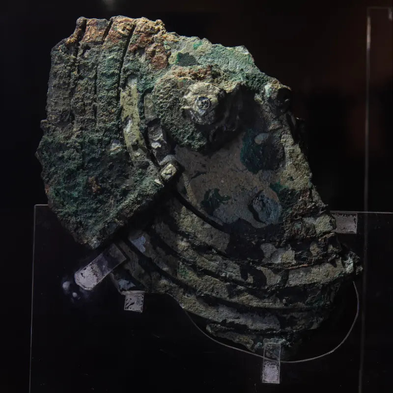
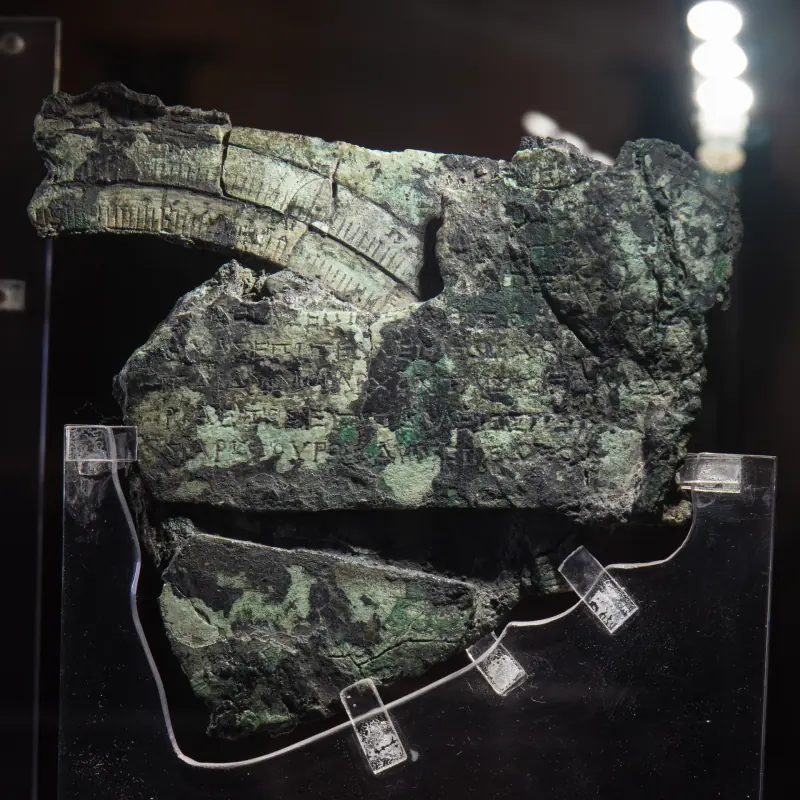
アンティキティラ機構の、 卓上の子孫
心臓は3軸のトゥールビヨン。光造形で刷るためのオープンソースの設計です。実機はまだ印刷されていません。
2000年前の天文計算機の子孫に、 月の秤動と、 サロス周期と、 傾く天球と、 18.6年の交点歳差を。
すべて歯数の整数比から。家庭医 たま × Claude (AI) の共作（2026-07〜08）。
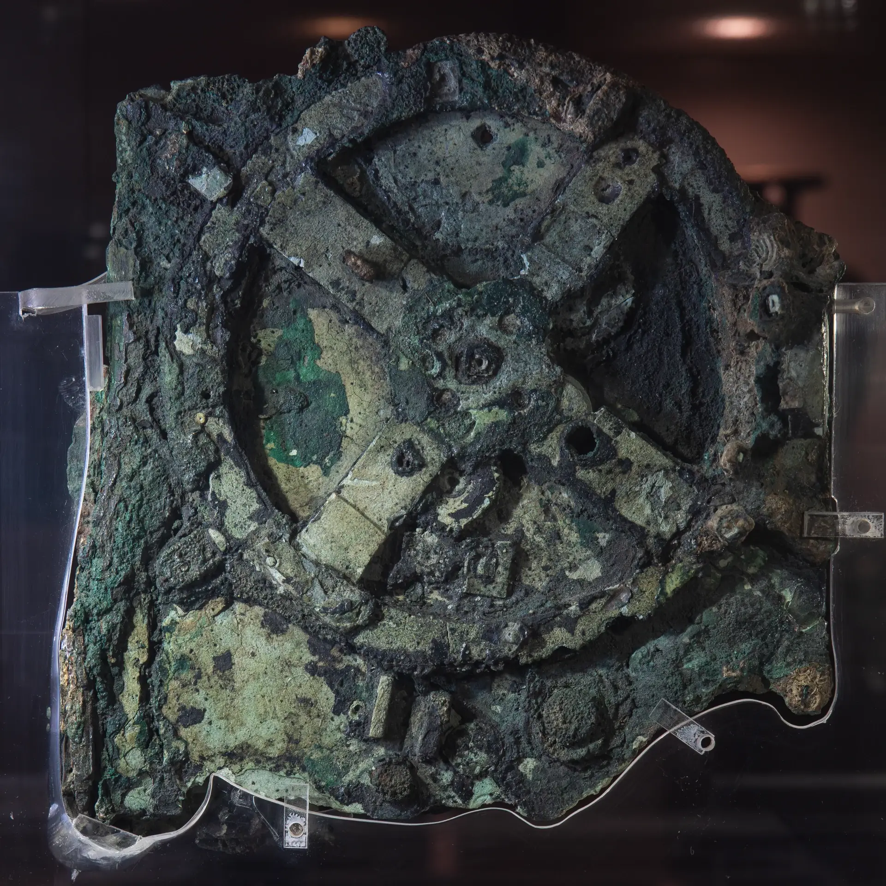
四つの天文の仕掛け
- 月がうなずく、秤動
- 食を刻む、サロス周期
- 十二宮を彫った、傾く天球
- 18.6年で一巡り、交点歳差
- すべて歯数の整数比から
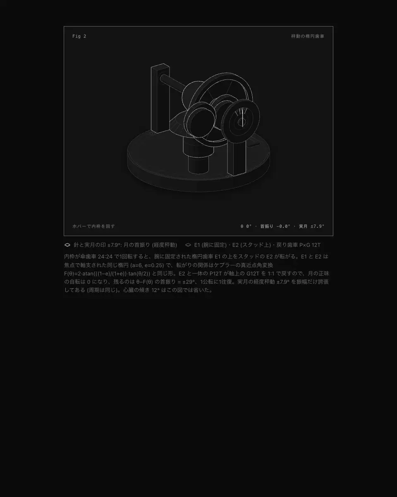
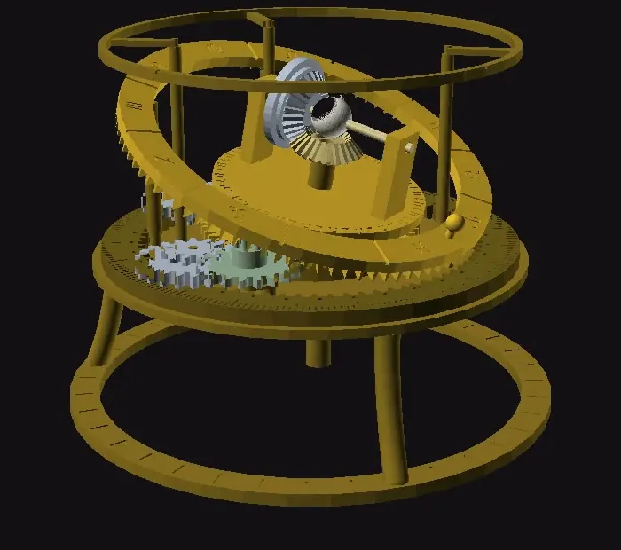
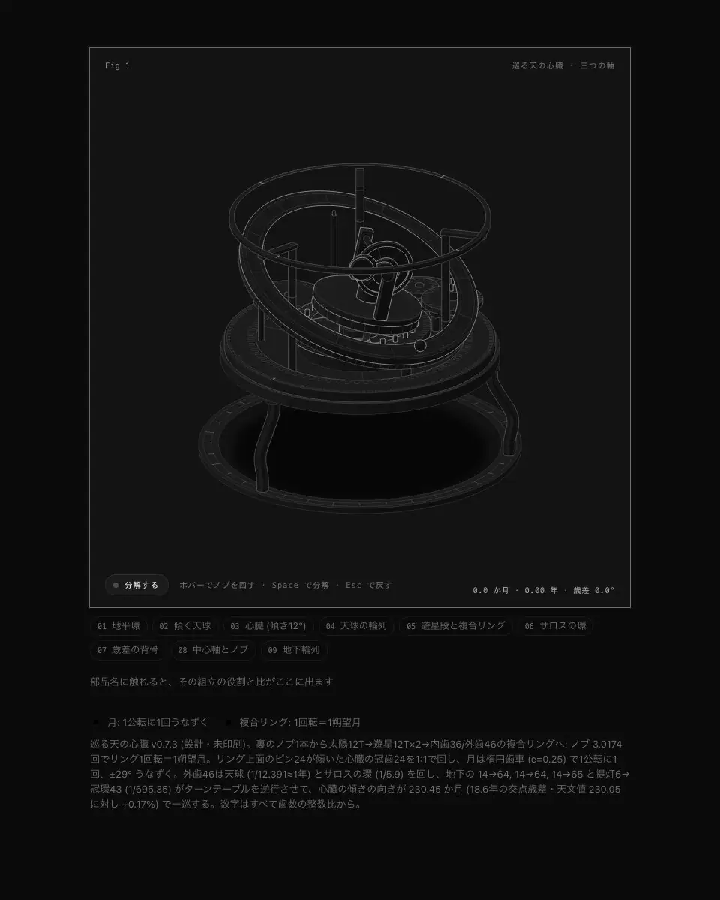
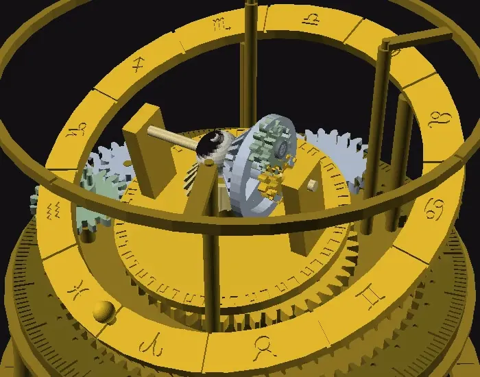
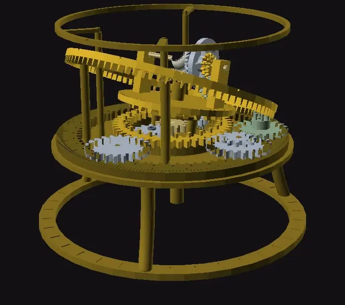
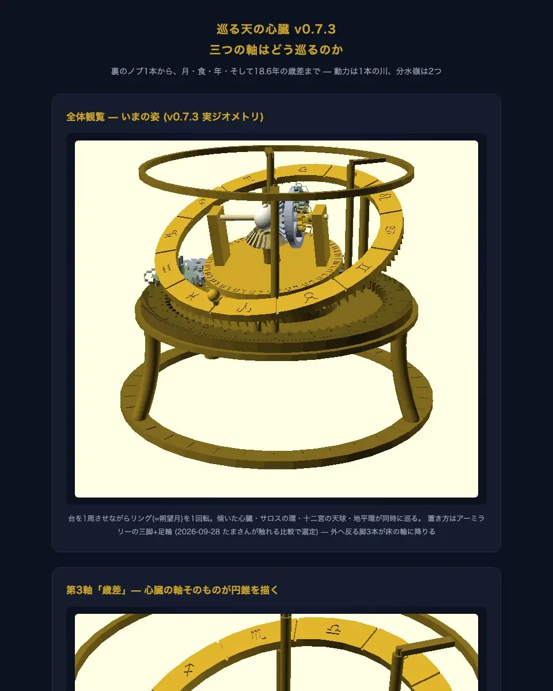
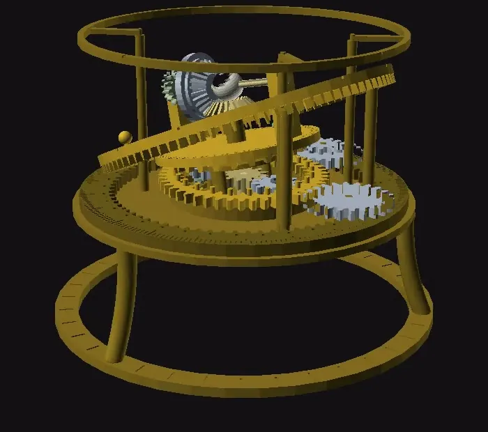
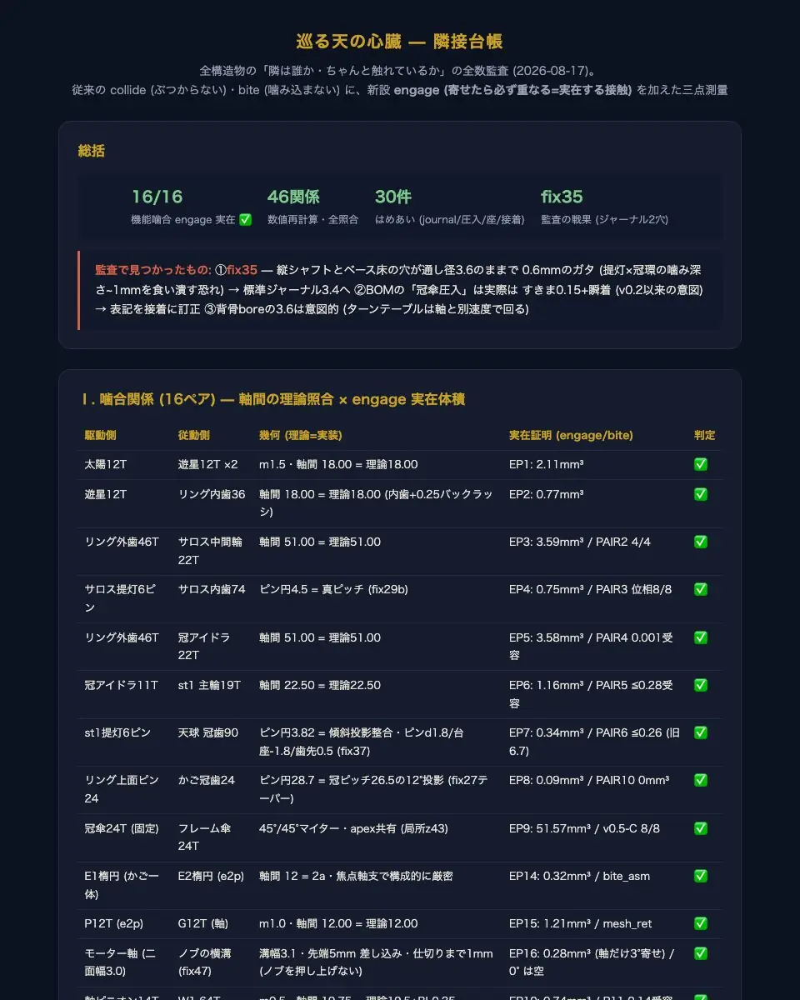
あなたの日付から、交点はどこまで
月の交点は18.6年で天を一巡りします。この機械では、ノブを回すとターンテーブルが背骨ごと逆行して、それを刻みます（誤差 +0.18%）。日付を入れると、その日から今日までに交点がどこまで巡ったかを描きます。
1周と159°
2000年1月1日から26.8年。18.6年で1周として計算し、逆行の向きに描いています。
模式図: 上から見たターンテーブルと冠環の歯。外周の目盛りは1年ごと。針は入れた日付に真上を指し、そこから逆行します。
いまの状態は、
v0.7.3 まで設計と検証済み。総当たり、重力、付け替え経路、トルク、浮き、倒れにくさ。実機は未印刷。
設計・検証の区切りは 2026-09-28。20剛体の総当たり（手回し／モーターの2モード）、重力（支えの有無）、モーターの揺りかごを前へ滑らせる付け替え経路の掃引までを通し、修正45件の検証履歴を残しています。実体化の記録は、印刷したらリポジトリに追記されます。
訂正も残しています。交点歳差の誤差を以前「+0.10%」と載せていましたが、比べる相手が天文の実値（230.05朔望月）でなく設計目標（228）で、遊星段の連成も入れていなかったため、実際は −1.37% でした。v0.7.1 で地下輪列の最終段を 65T に変え、連成込みで +0.18% にしています。訂正の記録を読む
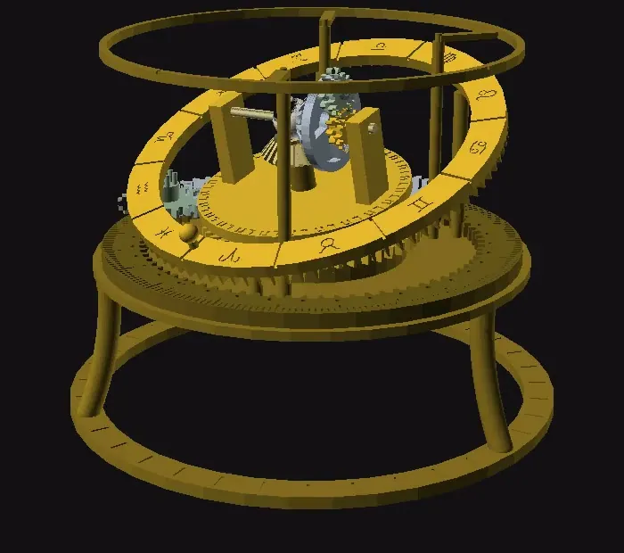
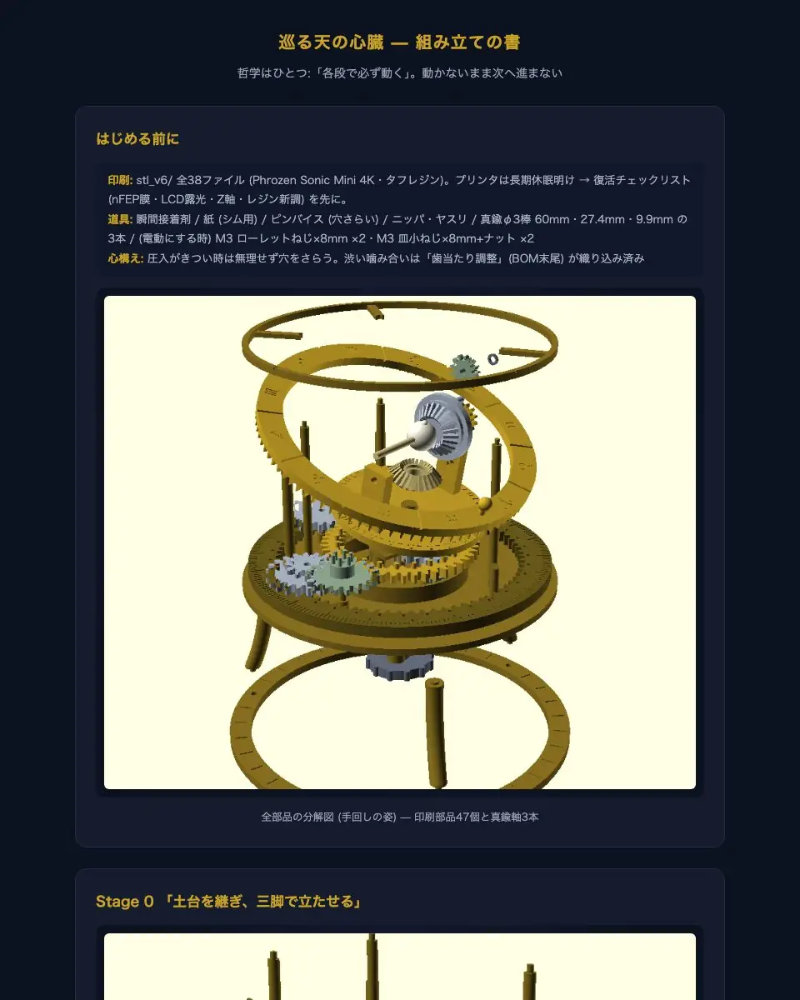
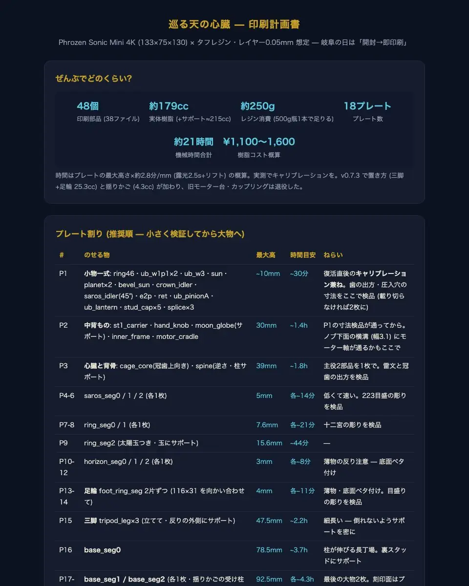
機械の画像はすべてレンダリングです
リポジトリの中身
全パラメトリック設計。衝突・噛み合い・シェル・engage の検証 PART 込み。
印刷部品。Phrozen Sonic Mini 4K 想定、タフレジン推奨。
部品表・輪列仕様・組立手順。真鍮丸棒 φ3（60 / 27.4 / 9.9mm）、28BYJ-48、M3 ローレットねじなど、印刷しない部品もここに。
修正45件の検証履歴。検査の四点測量の記録。
全数検証の台本。Manifold バックエンド付きの OpenSCAD（2025年以降）と Python3 が前提で、数分で回ります。
20剛体の総当たり（手回し／モーターの2モード）、重力、付け替え経路の掃引。physics_check.py はトルク・浮き・倒れにくさの机上計算。
置き方の触れる比較で選ばなかった案（三つ足・台座ドラム）の記録。選んだのはアーミラリーの三脚と足輪です。
印刷は光造形 XY 35µm クラスが前提です。FDM では小歯（m0.5）と提灯ピン d1.6 の再現が困難です。